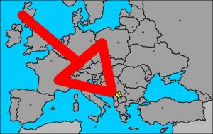
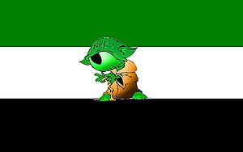
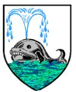
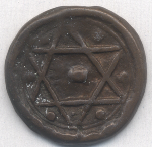
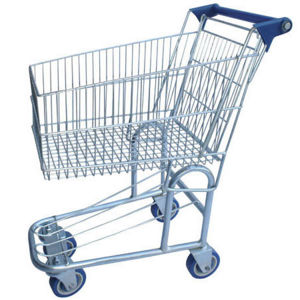

Chungoslavia
 De: La Frikipedia, la enciclopedia extremadamente seria.
De: La Frikipedia, la enciclopedia extremadamente seria.
| De la serie Países del planeta tierra:
|
| Chungoslavia.
|
|
| Lema: ¿¿¿Me regalas una moneda...???
|
Himno: "Fiesta, fiesta; pluma pluma gay..."
|
 Aquí está nuestro país.
|
| Capital
|
Chongoburgo.
|
| Mayor ciudad
|
Sikeswacha.
|
| Lenguas oficiales
|
Esperanto y Chongoburgués.
|
| Gobierno
|
República semidominada.
|
| Dirigente supremo:
|
Mepares Coayoda.
|
| Área
|
Pequeñita.
|
| Población
|
Muchos jedai, rusos y esquimales.
|
| Moneda
|
El Chungoeuro.
|
| Zona horaria
|
Ni ellos saben.
|
| Dominio Internet
|
Jajajaja...es un chiste, no???
|
| Código telefónico
|
Ni ellos saben tampoco.
|
| Nota: No hay nota.
|
Chungoslavia es un país que fue parte de la U.R.S.S.(Unión de Raquíticos Sucios y Sopencos) y que se independizó hace 15 minutos, los habitantes viven muy felices a base de donativos de la O.N.U. y de ellos mismos (el canibalismo se practica con mucha frecuencia, más frecuencia que los africanos) y que tienen un dictador llamado Mepares Coayoda que aparece en su bandera como máximo dirigente supremo.
Si bien no es un país influyente en el deporte es muy destacado en las peleas de gallos, luchas de mujeres en el barro y en tirar piedras al agua y que reboten.
Sus costumbres van desde el canibalismo hasta tener entre 13 y 27 hijos y darles de mamar a todos juntos con un sólo pezón, al mismo tiempo, también se hacen la circuncición pero sólo por diversión, no por ser judíos ni nada.
Algunas características de los chungoslavos
Las características de los habitantes de Chungoslavia se jactan de ser ridículas y dignas un psiquiátrico ubicado Alcatraz, son muchas pero enumeraremos algunas para ilustrarlos:
- Consideran que saludar agitando la mano es un insulto a tu madre.
- Y que si levantas tu dedo medio le estás deseando suerte.
- Se comen entre ellos.
- Comen productos derivados de la vaca: La piel, los cuernos, las ubres, la cola, las pezuñas y la costilla Nº 3.
- Cuando estornudan no cierran los ojos (a que tú no puedes).
- Acostumbran lamerse los codos (a que tú no puedes).
- Se comen entre ellos.
- Acostumbran descargar el aire de sus intestinos mientras comen (a que si tú lo haces tu madre te llena de hostias).
- También el aire dentro de sus estómagos.
- Se comen entre ellos.
- Si te insultan lo hacen en geringoso. (Ej: Lapa repe conpochapa depe tupu mapadrepe)
- Acostumbran usar palabras impropias de su idioma. (Ej: SORT, SNORF, POIK, SNORT)
- Se comen entre ellos.
- No parpadean.
- Pueden tener varicela 2 o más veces.
- Pueden crear un artículo bueno para la Frikipedia.
- Pueden, y ésta es una de sus características más
estúpidas sobresalientes, hablar Esperanto.
- Y también se comen entre ellos.
Símbolos nacionales
 La bandera de Chungoslavia, con su presidente dentro.
Los símbolos nacionales de Chungoslavia consisten en:
- Una bandera
- Un escudo
- Un himno: "Fiesta, fiesta, pluma pluma gay..."
- Una moneda, el Chongoeuro
- Y un lema nacional: "¿¿¿Me regala una moneda...???"
La Bandera
La idea de la bandera surgió de una persona en coma etílico, que al despertar después de 25 años dijo: "Chungoslavia??? Y bue... tiene que tener una bandera, no???". Después de intentar y fracasar 352 veces intentarlo crearla dijo: "Bue... mejor me dejo de hacerla con cemento fresco y la hago con tela" y así un día (haciéndola con tela) pensó que tendría que tener a su presidente dentro. Entonces pegó la imagen en un pedazo de tela y dijo: "Mmm... tendrían que combinar, no???" y entonces puso el verde y el negro que combinan a la perfección con los colores del presidente. Fin.
 El escudo de Chungoslavia. Es raro que tenga una ballena dentro puesto que no tienen salida al mar.
El Escudo
El escudo de Chungoslavia está basado en una ballena estornudando en un mar radioactivo, que en realidad quiere simbolizar... Una ballena estornudando en un mar radioactivo. El escudo fue ideado por un pescador de la zona del Báltico, al que un tornado lo arrastró por los aires durante 3 días a más de 500 m. de altura hasta que por fin cayó en pequeño país llamado Chungoslavia, en el que se había armado una guerra civil para decir el escudo definitivo del país, un bando proponía un mono con pañales tomando cerveza, y el otro a un elefante teniendo sexo con otro elefante. Hasta que llegó el pescador desde el aire y les dijo: "El escudo será una ballena estornudando en un mar radioactivo y se acabó" y todos le obedecieron.
El Himno
El himno de Chungoslavia es conocido por todo el mundo, como la Marsellesa, pero más masculino, vigoroso y viril, expresa toda la virtud del hombre, y de la apreciación respetuosa que se tienen mutuamente entre ellos. En su letra queda plasmado la masculinidad y el sentimiento del macho chungoslavo.
 Moneda chungoslava (hecha de barro).
La Moneda
La moneda es el Chungoeuro. Un Chungoeuro equivale a 0.20 dólares.Su creación fue muy particular ya que en una fuerte lluvia dos chicos de 6 años empezaron a jugar a la fabrica de monedas. Uno de ellos aprovechó el barro que había y formo el Chungoeuro y otro signo muy conocido.
El Lema Nacional
El lema nacional se basa en una de las frases más utilizadas por los chungoslavos en general, es famosa en todo el mundo y los turistas que, perdón, los POCOS turistas que, perdón de nuevo, los pocos idiotas que van a parar ahí por error, se paran a mirar a los señores chungoslavos que dicen esta frase sentados en la acera con la mano abierta y levantada y con ropas desgarradas y con moscas alrededor de ellos, les sacan fotos, los señalan y pasan un buen rato.
 Ejemplo del transporte más utilizado en Chungoslavia.
Transporte
Se usa mucho los patines, patinetas, monopatín y los pies, pero el más usado es el carrito de supermercado. Hay grandes, chicos, para 4 personas, para 2, para 8, cupé, deportivos, sedán y clásicos.
Leyes chungoslavas
Estás son algunas leyes de Chungoslavia, que de seguro les parecerán inútiles y estúpidas, pero como allí no hay democracia, es esto o la muerte.
- Si el control de alcoholemia da negativo te secuestrarán el auto.
- Cuida tu vereda, la vereda es tuya y no pública.
- Quién tire basura fuera del tarro será condenado a la orca.
- Y quién sea testigo será condenado al tiburón.
- Está prohibido hablar Esperanto... en serio, no lo intenten...
- Quiénes se llamen Humberto, al nacer, le cortarán un dedo.
- Y a los Roberto se le cortarán dos.
- Y ni hablar de los Alfredo.
- Cuyas mujeres tengan de medida 90-60-90, se las reducirán (a la fuerza) a 60-50-80.
- Aquellos que midan más de 1 metro 50 se les cortará 20 cm de pierna así el presidente no parece tan bajo.
- Quiénes se burlen de la estatura del presidente, se le cortarán los brazos con un peine.
- Quiénes tengan gripe, los matarán, así no sufren.
- En caso de crisis financiera, se les quitará plata a los pobres para dársela a los ricos.
- Si el presidente llegara a equivocarse en uno de sus discursos sobre sus brutales mandatos, se asesinará a todos los testigos.
- En caso de que el presidente pierda su bastón, quien lo encuentre será recompensado con 100 chungoeuros, que alcanzan para comprarse un kilo de pan y arvejas.
Chungoslavia en el deporte
Como ya les hemos dicho, Chungoslavia no es un país influyente en el deporte pero tiene lo suyo. Aquí podrán ver algunas de los premios de Chungoslavia en el deporte:
- Mundial de lucha de mujeres en el barro 1945, 1948 y 1949.
- Mundial de "Ponle la cola al burro" 1903 y 1915
- Mundial de "Súper Mario Bros." 1987
- Mundial de "A ver quién come más salchichas" 1965
- Mundial de canicas 1954
- Mundial de "A ver quién llega más lejos lanzándole un asno a un cualquiera"(no lo ganaron pero a que no sabías que existía)
Algunos chungoslavos famosos
- Gustav A. Elbarro (Bicampeón Olímpico de peleas en barro. Murió ahogado en el lodo, en medio de una pelea)
- Amíel Age Drez (Campeón regional de ajedrez mágico)
- El Gallo Pedro (Campeón de peleas de gallo de peso pluma. Entienden??? PLUMA!!! UNA PLUMA DE GALLO!!! GALLO-PLUMA, PLUMA-GALLO!!!)
- Nomén Tranmás (Cuatro veces campeón nacional y uno mundial de "A ver quién come más salchichas")
- Yosef Acturar (Famoso cobrador de impuestos en el mundo)
- Yosefa Kturar (Famosa cobradora de impuestos en el mundo, es prima del anterior)
- Conlosjuég Osyom Evicio (Subcampeón Súper Mario Bros 1983)
- Quepesáo Questán (Campeón de "A ver quién llega más lejos lanzándole un asno a un cualquiera")
- Rodolfo Chikilicuatre (A que no sabías que era chungoslavo)
- Lacol Apusebién ("Ponle la cola al burro" 1903 y 2007)
- Bill Gates (Guillermo Puertas)
- El Superagente 86
- Candimán
- Mepares Coayoda (Desde la creación del país hasta ahora es presidente de Chungoslavia. Se convirtio en el presidente más duradero en la historia)
- Chungoman
Próceres chungoslavos

El mismísimo Jhosemitte Bar-Karajusta
- Jhosemitte Bar-Karajusta
- Yostuv Encoma (Creador de la bandera)
- Eltorna Domei Zomierda (Creador del escudo)
- Los Sultanes (Creadores del himno)
- Soiunpo Brevag Abundo (Líder de los mendigos, él fue creador del lema nacional)
- Notir Enmas (Lucho por la independencia de Chungoslavia)
- Alay Ugular (Alentador del equipo chungoslavo de peleas en el barro)
- _____ _______ (Es el mas rico de Chungoslavia. Tiene en su poder 20 chungoeuros...ah!!! y si se preguntan por el nombre, les digo que no tiene, su madre lo abandonó ni bien nació)
¿Sabías que...
- ...mastican con las encías?
- ...pueden matarte con una pistola a balines?
- ...se divierten mirando el televisor apagado?
- ...si gritan pueden dejar sordo a más de medio mundo?
- ...cuando usan la computadora utilizan un ratón de verdad?
- ...pueden ganar el F1 Championship con los ojos cerrados?
- ...erutan por la nariz?
- ...pueden comerse una ballena de un solo bocado?
- ...dos chungoslavos, uno arriba del otro, forman un burro de dos pisos?
- ...y si le agregas otro son tres pisos?
- ...y así sucesivamente?
- ...los chungoslavos no son narigones, tienen la cara para atrás?
Véase también
Autor(es):
- Veni Vidi Vici
- Nicko
- Juakopp.
- E1324
- Nick X
- Chungoman
Frikipedia 2005-2016, Licencia
GFDL 1.2 - Extraído por FrikiLeaks

 Imperios de Europa
Imperios de Europa